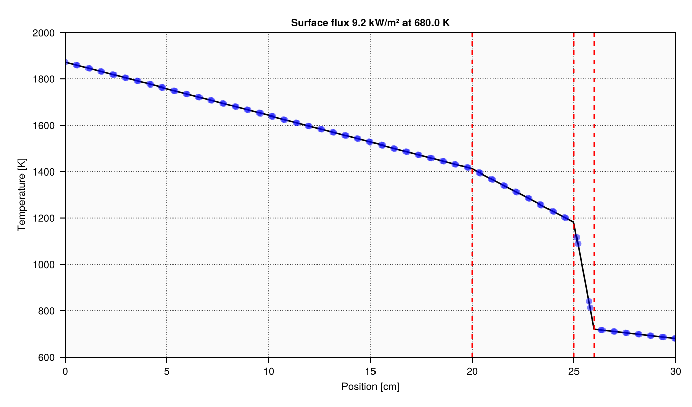

Elmer verification#
In this note we focus on the analysis of steady heat transfer across a multi-layer body composed of different materials. For evaluating the effect of temperature-dependence of thermal conductivity, each material region may be discretized into several slices. Since the radius of the system (~5m) is large compared to the wall thickness (~0.3m) a planar approximation is adopted here to simplify the base computations.
NOTE: this notebook assumes you have both AuChimiste.jl and Taskforce.jl packages available. You can clone and locally install them from their repositories or use a Kompanion environment, which makes them automatically available in Julia. Module SteadyHeatConduction is found under this same directory.
push!(LOAD_PATH, @__DIR__)
using CairoMakie
using SteadyHeatConduction
using Taskforce.Elmer
Model description#
In what follows we describe a procedure to solve the steady-state heat equation \(\nabla\cdotp{}q^{\prime}=0\) with \(q^{\prime}\) given by Fourier’s law \(q^{\prime}=-k\nabla{}T\). Its goal is to treat numerically the problem with temperature-dependent coefficients, i.e. \(k\equiv{}k(T)\).
For simplicity, let’s consider a domain of points equally spaced by a distance \(\delta\) in 1-D space \(z\in[0;L]\). In the left side of the domain we have a Dirichlet boundary condition given by \(T(z=0)=T_1\). In the absence of source terms, the heat flux at the first two internodal interfaces can be writen as
where \(k_{i,j}\) is defined as the harmonic mean of \(k_i\) and \(k_j\), a requirement for continuity as demonstrated, e.g, in Patankar (1980). Introducing the coefficients \(\alpha_{i,j}=-k_{i,j}\delta^{-1}\) we rearrange this equality as follows; since \(T_1\) is know, it is placed on the right-hand side, closing the first equation of the problem with boundary condition included:
Applying the same approach to the next set of nodes leads to the next equation which applies generically for any triplet of nodes inside the domain:
On the right size the system is submitted to a general Robin boundary condition given by the heat flux \(q^{\prime}(z=L)\) specified in terms of convection and radiation terms; this includes the convective heat transfer coefficient \(h\) and surface emissivity \(\varepsilon\) to the model parameters.
Note: for simplicity of notation and for writing the whole set of equations below, we assume the system is discretized into 5 nodes.
Because of the term expressed as the fourth power of the temperature in the last node, this equation makes the system nonlinear. Notice that this expression considers different temperatures for convection and radiation, \(T_{\infty,c}\) and \(T_{\infty,r}\), respectively. Below we include a term depending on \(T_{\infty,r}\) to the convective heat flux \(q_c^{\prime}\):
which allows the last equation of the system to be reformulated as
where the global heat transfer coefficient \(U\equiv{}U(T_5)\) is introduced; to deal with the nonlinearity we make use of a relation \(\tau_5\mapsto{}T_5\) to evaluate the coefficient accross iterations, where \(\tau_5\) is the last known approximation of \(T_5\) (starting with an initial guess).
Reorganizing the equation leads to
Putting it all together leads to the following matrix problem:
In summary this shows that for \(N\) temperatures, there is a \(N-1\) problem to be solved (as \(T_1\) is known) and also \(N-1\) interface coefficients \(\alpha_{i,j}\).
Solution strategy#
Since the left-hand side matrix depends on the solution itself, solving the model is an intrinsically iterative task; the following steps are proposed:
An initial guess \(\tau\) of solution is provided
The matrix coefficients and \(f(\tau_n)\) are evaluated
Problem is solved to update the solution \(\tau\)
If for iterations \(k\) and \(k-1\) all \(\vert\tau^{(k)}-\tau^{(k-1)}\vert<\epsilon\), solution is converged, otherwise repeat from the second step until convergence of maximum iterations is reached
Running Elmer#
Under the model directory one finds a gmsh file that can be converted into a gmsh grid with the following command (run from the project root directory):
cd("model") do
run(pipeline(`gmsh - domain.geo`, "log.gmsh"))
end
You can also launch gmsh user interface and verify the 1D mesh that must look like the following:

Because Elmer uses its own mesh format, we need to provide a conversion as follows:
cd("model") do
run(pipeline(`ElmerGrid 14 2 mdomain.msh -autoclean -merge 1.0e-05`, "log.elmergrid"))
end
Finally, running the model and recording the logs is done with:
cd("model") do
run(pipeline(`ElmerSolver`, "log.elmersolver"))
end
Reference model#
Below we create an instance of the reference model using the same layered structure (thicknesses and thermal conductivities) and boundary conditions as the provided Elmer case.
layers = (
(0.200, make_thermal_conductivity(4.0)),
(0.050, make_thermal_conductivity(2.0)),
(0.010, make_thermal_conductivity(0.2)),
(0.040, make_thermal_conductivity(9.0)),
)
model = let
model = SteadyHeatConduction1D(layers, 1873.15, 673.15, 313.15;
h = 10.5, ε = 0.79, ρ = 3000)
solve(model; β=0.6, atol=1.0e-12)
end;
Above we verify a total heat loss of 9.217 kW under the specified conditions; the following cell evaluates the analogous value evaluated with Elmer can be retrieved as provided below. Notice the 10 correction factor: the mesh created in domain.geo is 0.1 m height, and the provided integral value computed by Elmer is thus 0.1 m², so scale correction is needed. The result validates the quantity computed by Elmer.
let table = load_saveline_table("model/results"; fname = "scalars.dat")
power = 10 * table[end, "boundary int: temperature flux over bc 2"]
@info("Heat loss evaluated by Elmer .... $(round(power / 1000; digits=3)) kW/m²")
end
Below we provide a verification of the implemented solution (black line) against Elmer (blue dots). This closes the validation of the solution.
# You might check the convergence report to make sure everything is fine.
# get_convergence_history("model"; fname = "convergence.dat")
let table = load_saveline_table("model/results"; fname = "sides.dat")
x = table[!, "coordinate 1"][begin:10:end]
T = table[!, "temperature"][begin:10:end]
let (fig, ax) = plot_temperature(model, layers)
scatter!(ax, 100x, T; color = :blue, alpha = 0.5)
save("media/solution-reference.png", fig)
end
end;

Classification#
#elmer/domain/cartesian #elmer/domain/steady #elmer/models/save-materials #elmer/models/save-line #elmer/models/flux-solver #elmer/models/heat-equation